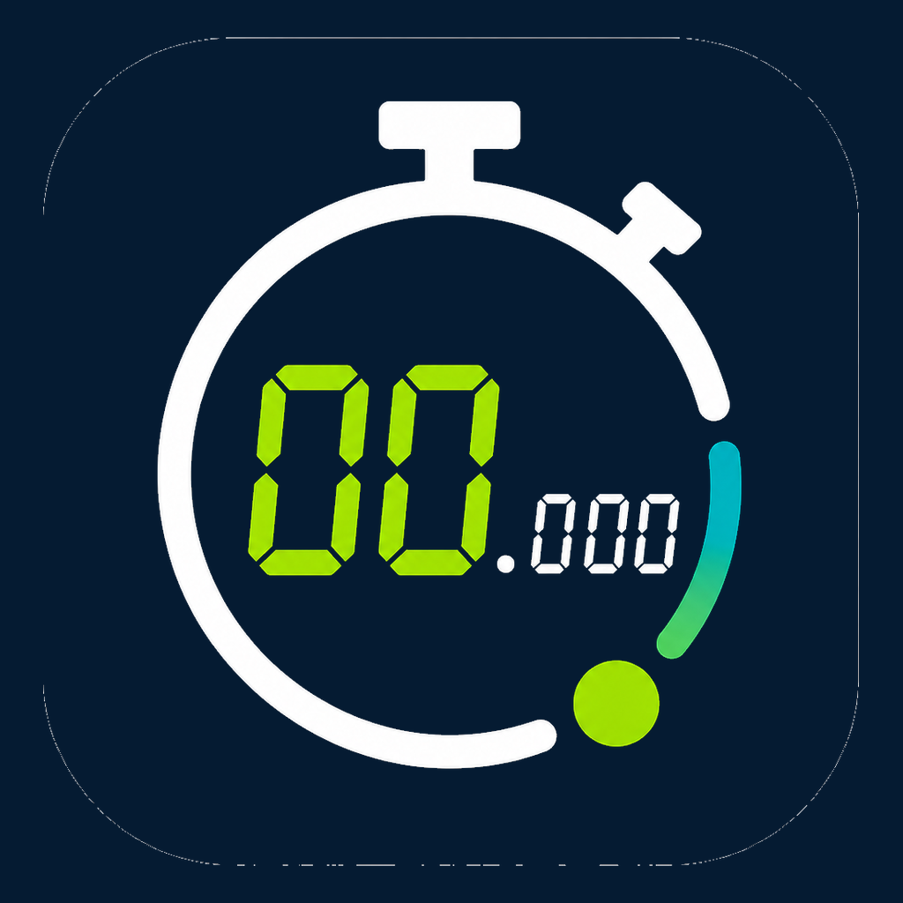
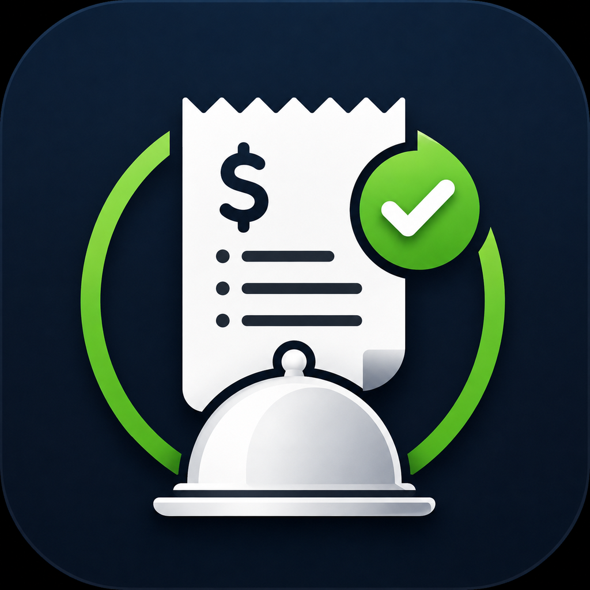
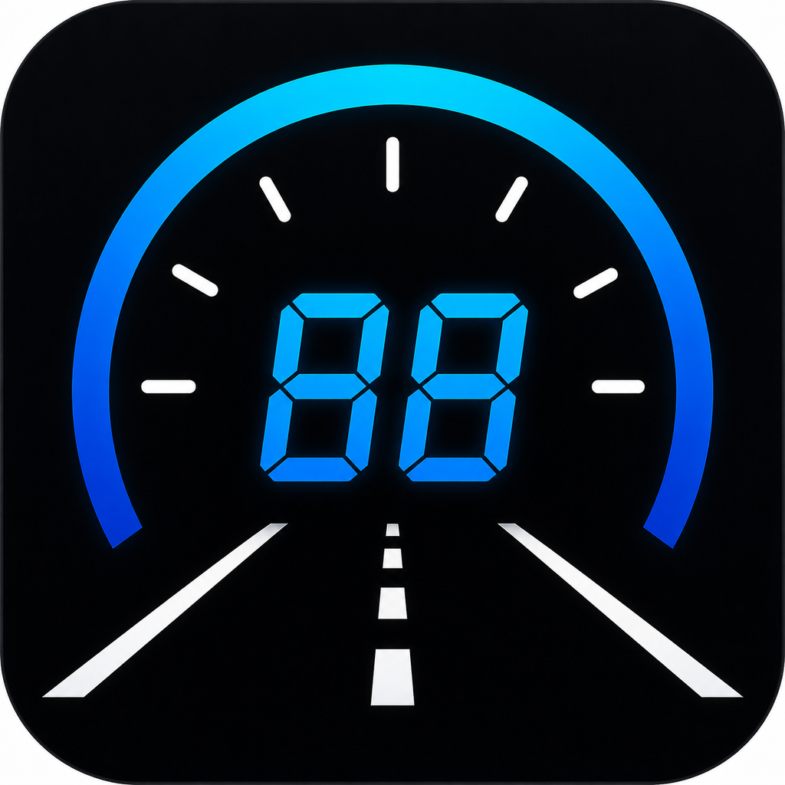
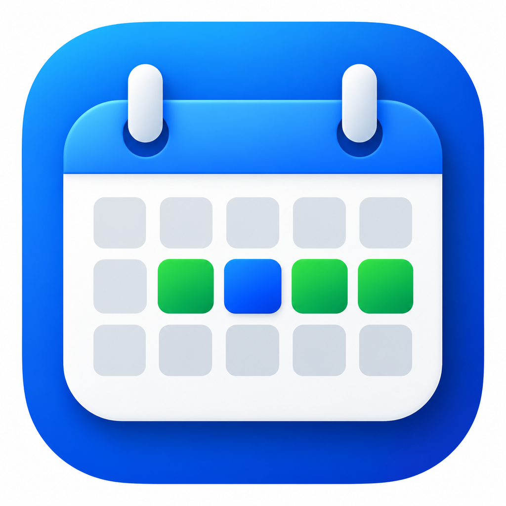
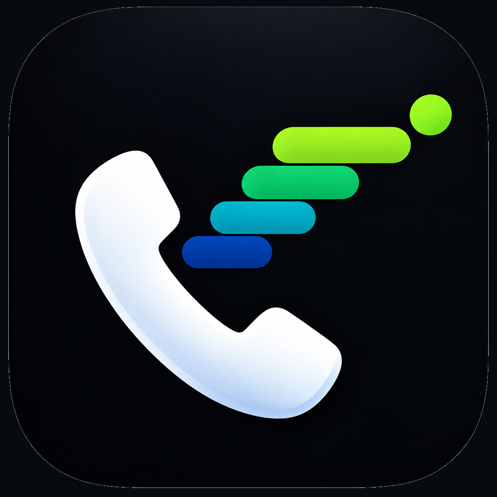
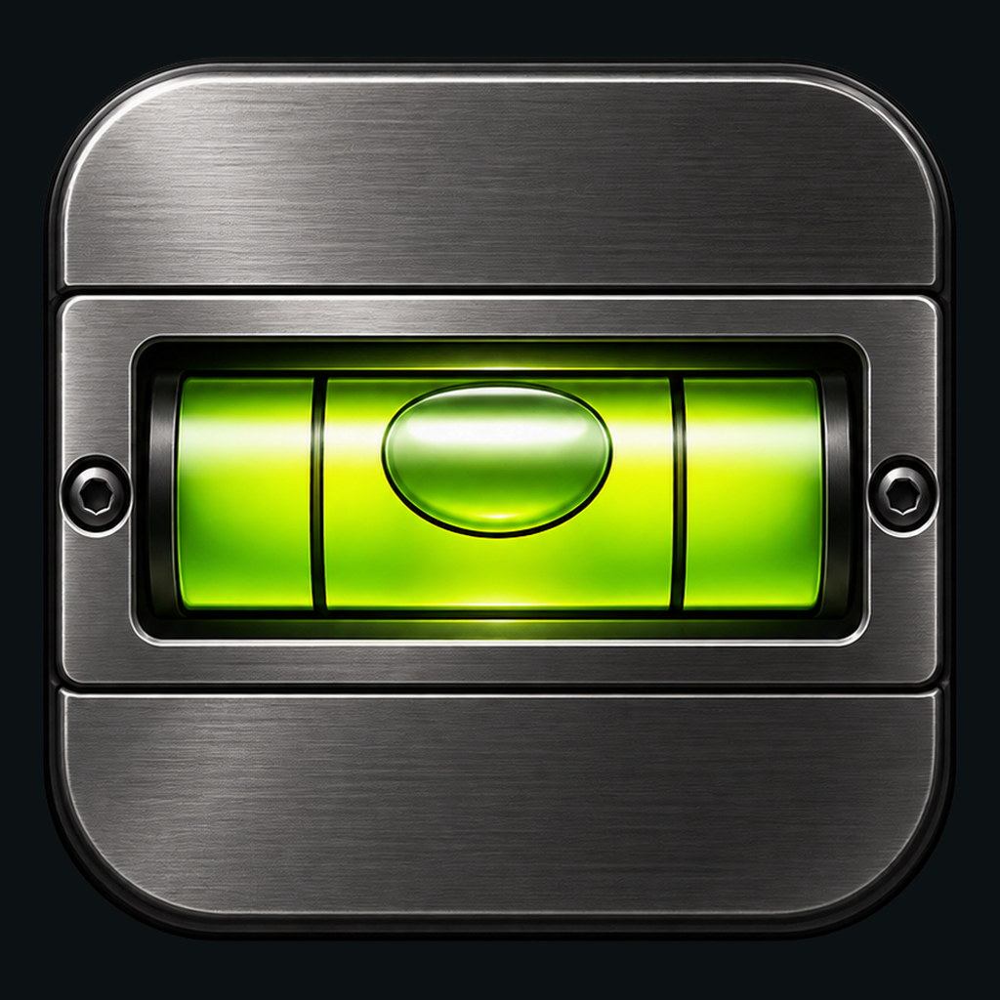
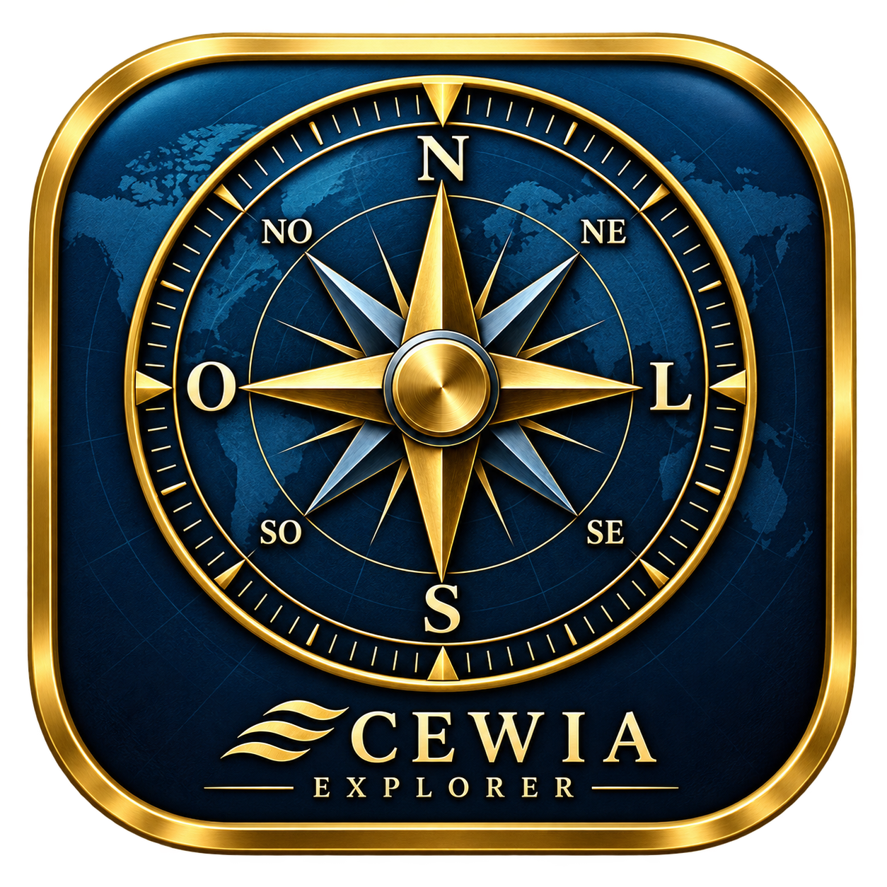
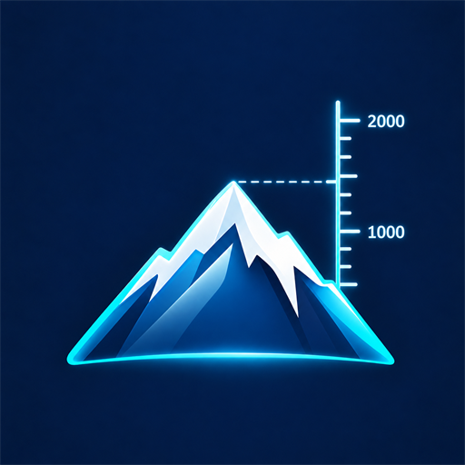

Cronômetro Gigante
Cronômetro em tela cheia com números gigantes, alta precisão, voltas e personalização de cores.
Página do aplicativo CEWIA Tech
CEWIA TechUtilitários Android diretos, sem anúncios e desenvolvidos com atenção à clareza, privacidade e facilidade de uso.

Cronômetro em tela cheia com números gigantes, alta precisão, voltas e personalização de cores.
Página do aplicativo
Divida contas e calcule a taxa de serviço em segundos, de forma simples e totalmente offline.
Página do aplicativo
Painel de bordo com velocímetro GPS, instrumentos de viagem e atalhos para seus aplicativos.
Página do aplicativo
Descubra oportunidades de feriados prolongados no Brasil e em diversos países.
Página do aplicativo
Chamadas, contatos e agenda em uma interface simples, organizada e acessível.
Página do aplicativo
Meça níveis, superfícies e ângulos com clareza e funcionamento offline.
Página do aplicativo
Orientação, coordenadas e referências celestes em um instrumento inspirado na navegação.
Página do aplicativo
Consulte sua altitude acima do nível do mar com GPS, funcionamento offline e leitura transparente.
Página do aplicativo